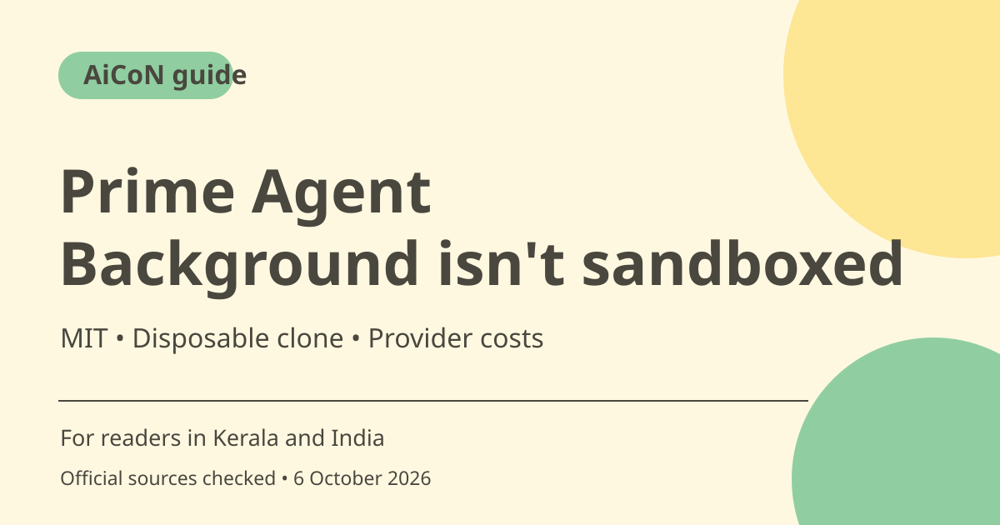

Prime Agent: persistent coding sessions and safety limits
Prime Agent is an open-source coding and research tool that can keep terminal sessions running in the background. Its official README warns that it runs model-generated commands with your user permissions and is not a security sandbox. Start with a disposable clone and review changes before trusting long-running work.

What is Prime Agent?
Prime Intellect's repository describes a coding and research agent for general and long-running tasks, with persistent working context and reusable configuration. It includes parallel child-agent work and resumable sessions. Those are software capabilities, not evidence that unattended work will always finish correctly or safely.
Who should use it?
Developers able to inspect commands, code changes and project state can evaluate it. It is not a consumer chat-app recommendation. Choose a trusted sample repository and a small reversible task. Do not begin in your home directory, a production service or a folder containing unrelated private files and credentials.
Background sessions need oversight
The README says daemon-backed sessions can continue after the terminal disconnects and can be reattached. That helps continuity but also means closing a terminal is not necessarily stopping work. Inspect running-session state and use the documented shutdown controls when you want execution to stop. Review the actual files and outcomes rather than assuming a retained session guarantees progress.
Refinement and rollback
The documented refine feature can apply small changes to supplemental prompts, memories and reusable configuration, with snapshots for rollback. Review what changed and why; do not treat self-improvement as an independently measured quality gain. A rollback of configuration does not automatically undo external messages, costs or file effects already produced.
The security warning is explicit
The README says its worker and kernel lifecycle controls are not a security sandbox. Commands execute with the user's permissions. It recommends a disposable clone, clean worktree or other checkpoint and an external restricted environment for untrusted work. Keep secrets out of prompts and inspect instructions from files or webpages before allowing them to drive actions.
Licence, install route and model costs
The official licence is MIT. Model providers and subscriptions or API calls are separate. Use the project's current maintained installation guide rather than an inherited or similarly named package; review installation code before running it. This article does not copy a pipe-to-shell command as a beginner shortcut or promise free inference.
How to use it, step by step
- Read the official README and licence, including the warning about user permissions and lack of a security sandbox.
- Prepare a disposable clone or clean version-controlled worktree without secrets and save the starting checkpoint.
- Use the current project's official installation guidance and inspect scripts before execution.
- Configure a supported provider through the documented login route and review subscription/API costs.
- Ask for one bounded change and inspect proposed commands and resulting diffs.
- Reattach and check persistent-session state if the terminal disconnects. Closing the terminal may not stop the agent.
- Run tests, review any refinement updates and stop unused background work through documented controls. Use an external restricted environment for untrusted code.
Cost, eligibility and limits
| Code licence | MIT in the official licence. Provider inference is separate. |
|---|---|
| Models | Subscription or API costs depend on your selected provider. No unlimited free model use promised. |
| Safety | User-permission command execution, not a security sandbox. Worktree checkpoint strongly advised. |
| Persistence | Background work can survive terminal disconnection. Check and stop sessions deliberately. |
Frequently asked questions
Does closing the terminal stop it?
Not necessarily. The README describes background sessions that can continue and be reattached.
Is the tool a security sandbox?
No. Its own README explicitly warns otherwise.
Does MIT mean the model costs nothing?
No. Your provider's subscription/API charges are separate.
Official sources
Checked 6 October 2026. Features and prices can change. This is a guide, not a personal product test.